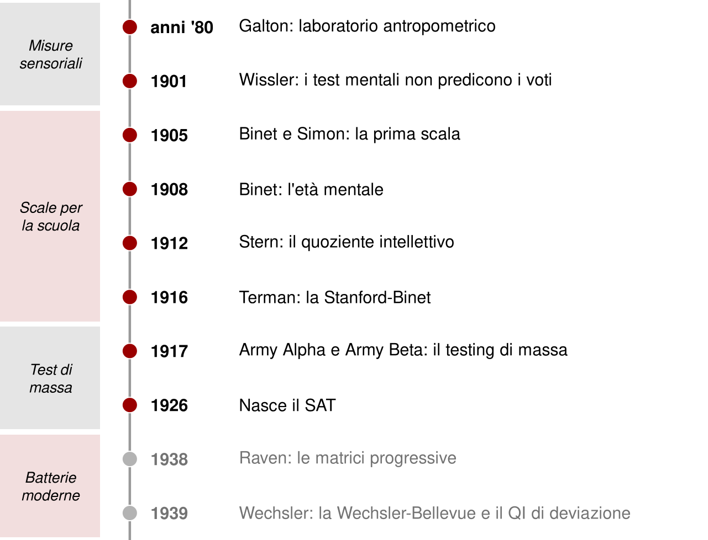

8 Dai primi test al testing di massa
L’intelligenza è il primo costrutto psicologico per cui sono stati costruiti test, e la storia di quei test coincide in gran parte con la nascita della psicometria. Punteggi standardizzati, campioni normativi, somministrazioni collettive, risposte a scelta multipla: sono state inventate qui e poi estese a personalità, psicopatologia, apprendimento.
È una storia di innovazioni notevoli e di errori gravi. Alcuni errori erano tecnici, e sono stati corretti. Altri erano morali e politici, e hanno lasciato un’ombra che dura ancora. Questo capitolo segue le tappe principali fino alla Prima guerra mondiale e agli anni immediatamente successivi. Il prossimo riprende il filo dalle scale moderne.
8.1 Galton: un fallimento istruttivo
Negli anni Ottanta dell’Ottocento Francis Galton, cugino di Charles Darwin, aprì a Londra un laboratorio antropometrico. Per una piccola somma i visitatori potevano farsi misurare: diametro della testa, acutezza visiva e uditiva, capacità di discriminare pesi, tempi di reazione, forza della presa, capacità polmonare. Galton era convinto che l’intelligenza fosse in larga parte ereditaria e che si manifestasse nell’efficienza del sistema nervoso, quindi in capacità sensoriali e motorie elementari (Galton, 1869).
Il progetto aveva elementi davvero innovativi. Era il primo tentativo di misurare quantitativamente le differenze intellettive. Combinava una teoria, quella evoluzionista, con tecniche di misura. E cercava una forma di validità: voleva verificare se chi stava sopra la media nelle misure stava sopra la media anche nel successo nella vita.
Non funzionò. Le misure sensoriali e motorie correlavano poco fra loro e quasi nulla con indicatori di successo. Negli Stati Uniti James McKeen Cattell riprese l’approccio con i suoi «test mentali», e un’analisi condotta nel 1901 su studenti universitari mostrò che i punteggi non correlavano con i voti (Wissler, 1901). L’idea che l’intelligenza fosse una questione di sensi acuti e riflessi pronti fu abbandonata.
C’è poi l’altro lato. Galton coniò il termine «eugenetica» e ne fu un convinto sostenitore, con posizioni apertamente razziste. Erano idee molto diffuse nell’élite scientifica del tempo. Questo spiega il contesto, non lo giustifica.
8.2 Binet: misurare per proteggere
La svolta arrivò da un problema pratico. In Francia l’istruzione primaria era diventata gratuita e obbligatoria per tutti. Nel 1904 il governo istituì una commissione per individuare i bambini che non riuscivano a trarre profitto dall’insegnamento ordinario e avevano bisogno di un sostegno particolare. Alfred Binet, psicologo e membro di una società per lo studio psicologico dell’infanzia, si dedicò alla questione.
L’obiettivo era stabilire se un bambino potesse essere inserito con profitto nella classe della sua età. Con Théodore Simon, Binet costruì una scala presentata per la prima volta nel 1905, anche a un congresso internazionale a Roma (Binet & Simon, 1904). Conteneva una trentina di prove, per lo più verbali: nominare oggetti o parti del corpo, ripetere frasi o cifre, definire parole astratte, trovare la parola mancante in una frase, copiare una figura, ordinare oggetti di peso diverso.
La differenza rispetto a Galton era netta. Binet non misurava processi elementari, ma capacità complesse come comprensione, giudizio e ragionamento, le stesse che servono a scuola. E insisteva su un punto che resta attuale: nessuna prova isolata può valutare l’intelligenza, ma solo l’insieme. Un bambino può avere una difficoltà specifica a trovare le rime o a usare le forbici senza che questo dica molto delle sue capacità generali.
Molti tipi di prova introdotti da Binet sono ancora in uso, in forme simili, nelle batterie moderne. Altri aspetti del suo pensiero sono meno noti. Binet credeva che le capacità intellettive potessero essere migliorate con esercizi appropriati, una sorta di «ortopedia mentale». Non considerava l’intelligenza una dotazione fissa. E pensava che il ragionamento del bambino seguisse processi diversi da quelli dell’adulto, anticipando un tema che Jean Piaget avrebbe sviluppato. Soprattutto, concepiva la valutazione come strumento di tutela: serviva a dare aiuto a chi ne aveva bisogno, non a escludere.
8.3 L’età mentale e il primo quoziente
Nella prima versione le prove venivano presentate in ordine di difficoltà crescente e il bambino veniva classificato in categorie qualitative, con etichette mediche dell’epoca oggi giustamente abbandonate. Nella revisione del 1908 Binet introdusse un’idea più elegante: l’età mentale. Se un bambino superava le prove che la maggior parte dei bambini di otto anni supera, la sua età mentale era otto anni, qualunque fosse la sua età anagrafica.
Nel 1912 William Stern propose di dividere l’età mentale per l’età cronologica (Stern, 1912). Lewis Terman moltiplicò il rapporto per cento e lo adottò nella sua versione statunitense della scala. Nacque così il primo quoziente di intelligenza:
\[ \text{QI di rapporto} = \frac{\text{età mentale}}{\text{età cronologica}} \times 100 \]
Un bambino di 4 anni con le prestazioni tipiche dei 6 avrebbe un QI di 150; uno di 6 anni con le prestazioni tipiche dei 4 avrebbe un QI di 67.
Il nome «quoziente» viene da qui. Ma questa formula non si usa più da decenni, e il QI moderno ha un significato e un calcolo completamente diversi. Il QI di rapporto aveva difetti seri.
- La metrica è disuguale. Un anno di differenza pesa molto di più a 4 anni che a 11. Lo stesso scarto in età mentale non corrisponde allo stesso scarto in capacità.
- Lo sviluppo non è lineare. Le prestazioni nei test crescono rapidamente nell’infanzia e si appiattiscono nella tarda adolescenza. Per mantenere un QI di 150, un ragazzo di 15 anni dovrebbe avere un’età mentale di 22 anni e mezzo, un concetto privo di senso. Per gli adulti la formula non funziona.
- Il concetto è troppo globale. L’età mentale evoca una maturazione complessiva della persona. Dire che un adulto con sindrome di Down «ha un’età mentale di sei anni» confonde la prestazione in alcuni test con l’esperienza, gli interessi e l’autonomia di un adulto.
Oggi anche le scale per i primi anni di vita usano punteggi di deviazione dalla media dei coetanei, che vedremo nel prossimo capitolo.
8.4 Terman e il lato oscuro
Lewis Terman portò la scala di Binet all’Università di Stanford, la adattò, la standardizzò su un campione statunitense e la pubblicò nel 1916 come Stanford-Binet (Terman, 1916). Il test ebbe un successo enorme e fu rieditato più volte, fino alla quinta edizione del 2003.
Terman, però, ne sostenne l’uso a fini eugenetici. Nello stesso volume del 1916 attribuiva a cause razziali i punteggi bassi di bambini di origine messicana, afroamericana e di altri gruppi, ne raccomandava la separazione in classi speciali e presentava la loro presunta fertilità elevata come un problema eugenetico. Fu membro di organizzazioni che promuovevano la sterilizzazione obbligatoria delle persone con basso livello intellettivo, praticata in molti stati statunitensi nei primi decenni del Novecento e avallata dalla Corte Suprema nel 1927.
Lo strumento di Binet, pensato per proteggere, veniva così usato per classificare e discriminare. Il contrasto illustra un punto generale: la validità di un test non dice nulla sulla legittimità dell’uso che se ne fa. E le premesse ideologiche di chi interpreta i punteggi pesano almeno quanto la qualità dello strumento.
La Stanford-Binet aveva anche limiti tecnici. Era nata per l’età evolutiva e restava legata all’età mentale, inadatta agli adulti. Era orientata a individuare deficit e distingueva male i livelli alti. E poggiava molto su prove verbali, che penalizzavano chi aveva avuto poca istruzione o non padroneggiava la lingua.
8.5 La guerra e il testing di massa
Nel 1917 gli Stati Uniti entrarono nella Prima guerra mondiale. L’esercito doveva assegnare rapidamente ruoli a oltre un milione e mezzo di reclute. Un test individuale come la Stanford-Binet richiedeva troppo tempo. Molte reclute erano analfabete o non parlavano inglese. E serviva una scala adatta agli adulti.
Robert Yerkes, allora presidente dell’American Psychological Association, riunì un gruppo di psicologi, fra cui Terman, per costruire test collettivi a carta e matita (Yerkes, 1921). Nacquero così due strumenti:
- l’Army Alpha, per chi sapeva leggere e scrivere in inglese, con prove di vocabolario, serie numeriche, comprensione di istruzioni verbali, analogie;
- l’Army Beta, per analfabeti e non anglofoni, con istruzioni mimate a gesti e prove non verbali: labirinti, completamento di figure, cifrari, sequenze di simboli.
I punteggi grezzi, fino a 212 punti per l’Alpha e 118 per il Beta, venivano convertiti in fasce, dalla A, «molto superiore», alla E, corrispondenti grosso modo a percentuali fisse della distribuzione (Tabella 8.1). Le fasce orientavano l’assegnazione: ufficiali dalle prime, ruoli semplici o esonero dalle ultime. Era un sistema rudimentale di punteggi basati sulla posizione relativa, il primo passo verso i punteggi di deviazione.
| Fascia | Etichetta | Quota approssimativa | Impiego suggerito |
|---|---|---|---|
| A | molto superiore | 4–5% | ufficiali con elevate responsabilità |
| B | superiore | 8–10% | ufficiali con minori responsabilità, sottufficiali |
| C+ | media alta | 15–18% | sottufficiali, alcuni ruoli di guida |
| C | nella media | 25% | soldati semplici con piccole responsabilità |
| C− | media bassa | 25% | soldati semplici, compiti autonomi ma ripetitivi |
| D | inferiore | 15% | soldati semplici, compiti semplici sotto supervisione |
| D−, E | molto inferiore | pochi | ai limiti del servizio regolare; ruoli di supporto o esonero |
Le innovazioni furono notevoli: somministrazione collettiva, risposte a scelta multipla, scoring rapido, standardizzazione su numeri enormi, una prova non verbale per non sottovalutare chi non conosceva la lingua. Molte di queste soluzioni sono ancora alla base della valutazione su larga scala.
I limiti furono altrettanto evidenti. Anche maneggiare un modulo a carta e matita richiede familiarità con la scuola. Le condizioni di somministrazione erano spesso caotiche, e reclute che avrebbero dovuto svolgere il Beta finivano per svolgere l’Alpha. Alcune prove dell’Alpha erano domande di cultura generale statunitense, che misuravano soprattutto quanto a lungo si era vissuti nel paese.
8.6 Dai test ai pregiudizi
I dati dell’esercito furono poi usati per sostenere tesi sulla superiorità di alcuni gruppi nazionali. Nel 1923 lo psicologo Carl Brigham pubblicò un’analisi che classificava gli immigrati per paese d’origine, trovando punteggi più bassi fra quelli provenienti dall’Europa meridionale e orientale, italiani compresi (Brigham, 1923). I suoi stessi dati mostravano che il punteggio cresceva con gli anni di residenza negli Stati Uniti, un indizio evidente del peso della lingua e dell’esposizione culturale; Brigham lo interpretò invece come segno di un peggioramento delle ondate migratorie più recenti. Pochi anni dopo ritrattò pubblicamente quelle conclusioni (Brigham, 1930).
Nel 1924 il Congresso statunitense approvò una legge che limitava drasticamente l’immigrazione da quei paesi. Il ruolo dei test in quella decisione viene spesso esagerato: un’analisi dei dibattiti parlamentari ha mostrato che i risultati dei test furono citati raramente e che le motivazioni principali erano di altro tipo (Snyderman & Herrnstein, 1983). Ma il clima intellettuale in cui i test venivano interpretati era quello. E alcuni dei loro promotori lo alimentarono attivamente.
Brigham, intanto, aveva adattato l’esperienza dell’esercito a un uso civile. Nel 1926 nacque lo Scholastic Aptitude Test (SAT), concepito per una selezione universitaria che premiasse il merito anziché la famiglia d’origine. Le sue caratteristiche, cioè scelta multipla, somministrazione collettiva, standardizzazione su campioni ampi, sono state ereditate dalle grandi indagini educative contemporanee, come PISA e INVALSI. Queste ultime non valutano singoli individui, ma sistemi scolastici, e sono più legate ai programmi; i loro punteggi, tuttavia, sono dominati da un fattore generale molto simile a quello dei test cognitivi (Pokropek et al., 2022).
8.7 Che cosa resta
La prima stagione dei test lascia un’eredità doppia. Da un lato un insieme di soluzioni tecniche che hanno funzionato: prove complesse anziché elementari, aggregazione di molte prove, confronto con un gruppo di riferimento, versioni non verbali, somministrazione standardizzata. Dall’altro una serie di errori: un quoziente costruito su una metrica inadeguata, prove contaminate dalla lingua e dalla scolarità, interpretazioni razziali di differenze che riflettevano soprattutto esperienze diverse.
Chi oggi diffida dei test di intelligenza ha spesso in mente questa storia. Fa bene a ricordarla. Il passo successivo è chiedersi quali di questi errori siano stati corretti e quali richiedano ancora vigilanza. Il prossimo capitolo comincia da qui.